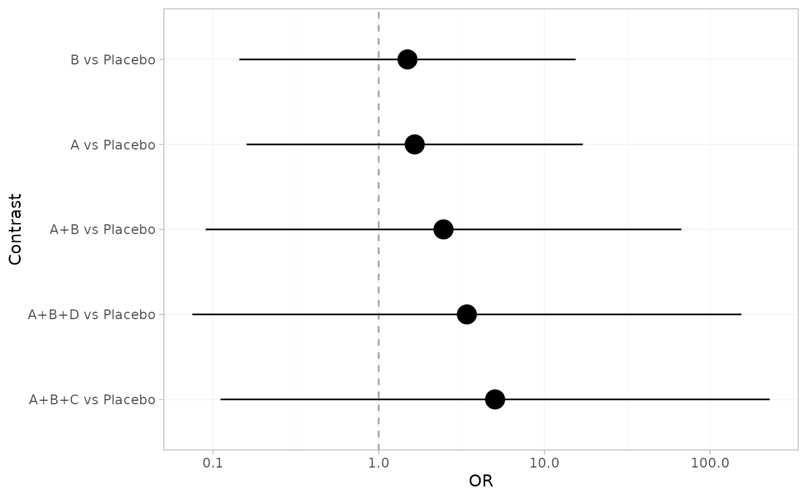
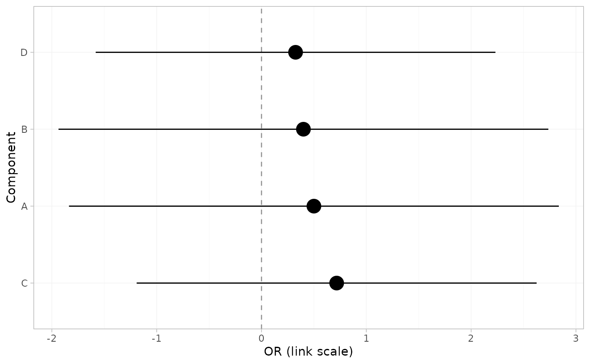

A ggplot2 forest plot of the estimates in a cpaic fit. Ported from
multinma::plot.nma_summary() (Phillippo et al. 2020) and re-implemented on
ggplot2 alone.
Usage
forest(
x,
...,
what = c("relative", "component"),
order = c("estimate", "alphabetical", "none"),
ref_line = NULL,
point_size = 1.2,
show_na = TRUE
)
# S3 method for class 'cpaic_effects'
plot(x, y, ...)
# S3 method for class 'cpaic_bridge'
plot(x, y, ...)
# S3 method for class 'cpaic_fit'
plot(x, y, ...)Arguments
- x
A
cpaic_effectsdata frame (fromrelative_effects()), a fitted cpaic object (cpaic_bridge,cpaic_maic,cpaic_stc,cpaic_mlnmr), or a component-effect data frame fromcomponent_effects().- ...
Passed to
relative_effects()/component_effects()whenxis a fit (for examplenewdatafor acmlnmr()fit).- what
"relative"(default) for relative effects, or"component"for the incremental effect of each component.- order
Row ordering:
"estimate"(default, most to least favorable),"alphabetical", or"none"(the order in the input).- ref_line
Position of the vertical reference line. Defaults to the null value of the summary measure (
1on a back-transformed ratio scale,0otherwise);NAdraws none.- point_size
Size of the point-estimate marker. Default
1.2.- show_na
Show non-estimable contrasts as labelled empty rows? Default
TRUE. Setting this toFALSEhides evidence that the network cannot answer part of your question, so leave it on unless you have a reason.- y
Unused, for compatibility with the
plot()generic.
Details
Contrasts that the component design cannot identify are shown, labelled
not estimable, rather than silently dropped. Dropping them would leave the
reader with a plot that looks complete when it is not; see
estimable_effects() and estimable_effects_at().
A table with several comparators (from relative_effects(all_contrasts = TRUE)) is faceted, one panel per comparator. Ratio measures are drawn on a
log axis, on which they are symmetric. Pass level through ... to change
the interval width.
Examples
net <- cpaic_network(cpaic_bin_agd, sm = "OR", inactive = "Placebo")
br <- cnma_bridge(net)
forest(br)

forest(br, what = "component")
